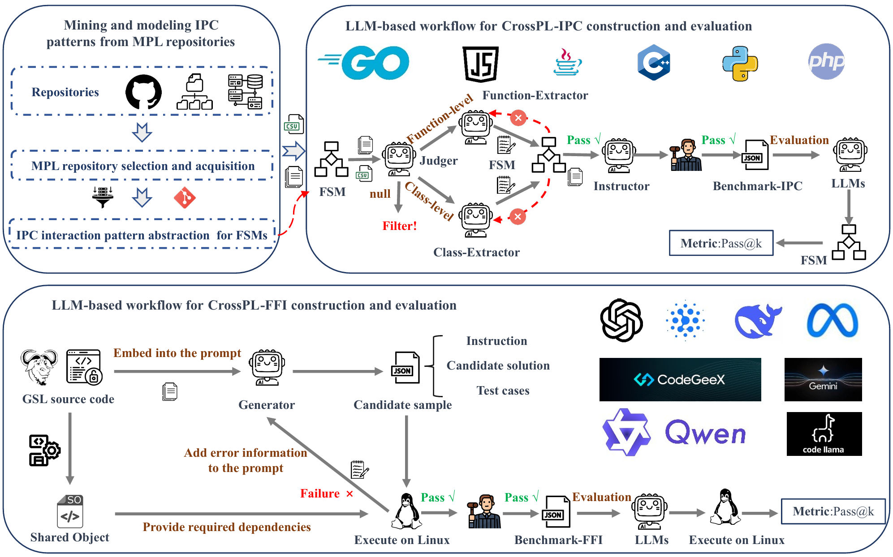

Zhanhang Xiong (熊展航)
PhD Student, Zhejiang University |
I am a PhD student at Zhejiang University working on large language models for software engineering. My research focuses on code generation, multilingual code interoperability, and industrial control systems.
My recent work explores:
|
 |
CrossPL: Systematic Evaluation of Large Language Models for Cross Programming Language Interoperating Code Generation |
|
A wind speed forecasting method based on EMD-MGM with switching QR loss function and novel subsequence superposition |
|
TSFF-Net: A novel lightweight network for video real-time detection of SF6 gas leaks |